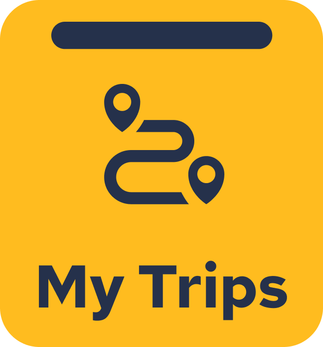
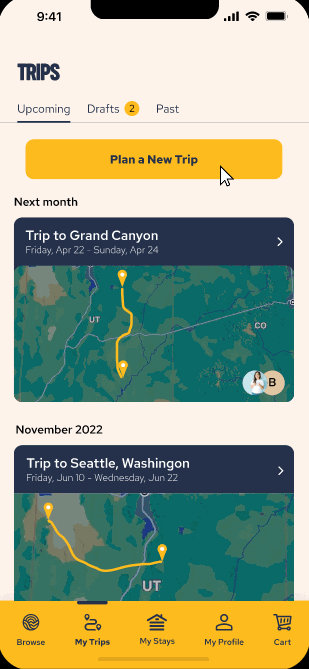
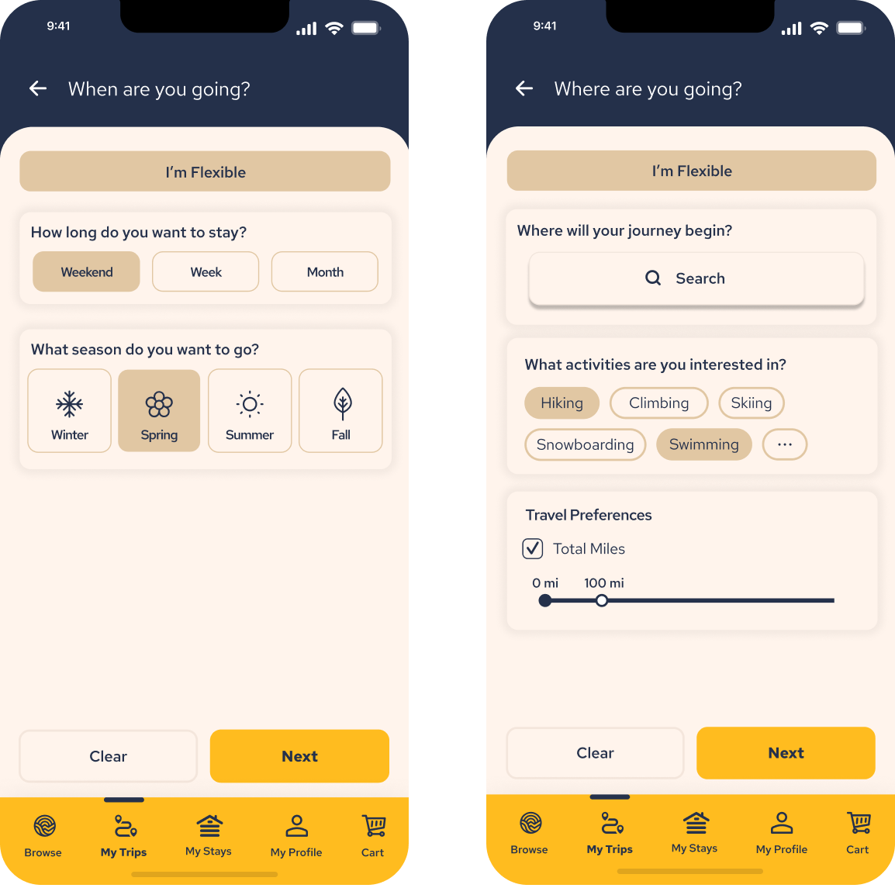
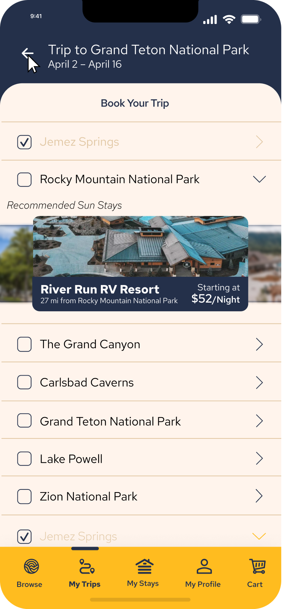
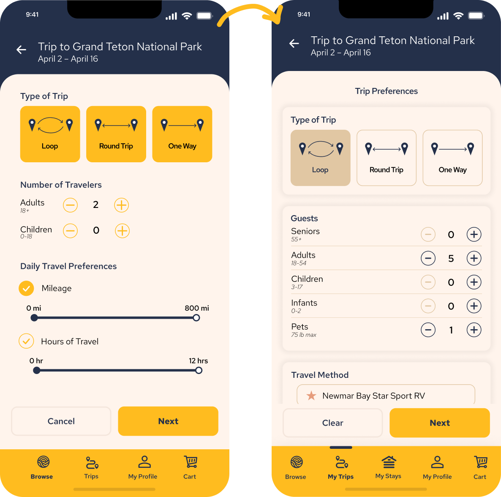

Challenge
Sun Communities works to appeal to adventerous travelers that enjoy
visiting scenic locations across the United States by providing
convenient booking of country-wide camping and RV sites. As part of
their next steps towards
bolstering their mobile application and attracting new users,
they wish to design a trip planner that allows the user to take the
stress out of trip planning while promoting in-house properties.

Solution
My team worked to design a comprehensive trip planner that allows
users to imagine their journey without the over-stimulation of
competing trip planners. The planner provides flexibility to a variety
of users, whether they know exactly where they want to go or need some
inspiration to begin planning.

User Flexibility
In designing the trip planner, I wanted to ensure users had the
abilitiy to utilize the planner even if they didn’t have the exact
details of their trip narrowed down. Thus, I created a “smart
suggestions” feature that users can toggle to find popular attractions
along their route. These can be tapped to view details about the spot,
and can quickly be added to the trip (or removed from the
suggestions). I also worked with my teammates to create flexible
options for location and time frame, using interests and
approximations to auto-generate a trip for the user.


Brand Promotion
While the trip planner is intended for use by anyone, whether booking
through Sun Outdoors or not, I still wanted to ensure the company’s
properties were being promoted. I accomplished this by creating and
emphasizing a “Start Booking” page after finalizing a trip, which
suggests properties close to each stop of the trip. I also created a
share functionality for trips in order to expand outreach and attract
a larger user base.
Design Accessibility
A key focus of our final design was accessibility, especially in terms
of color. One of Sun Outdoor’s primary colors is a yellow-orange
shade, and is used for many of the interactable features. However, the
color is difficult to see in contrast with the pale background, so our
team restructured the color palette to make better use of the darker
secondary colors and ensure the key features were visible to all
users.
